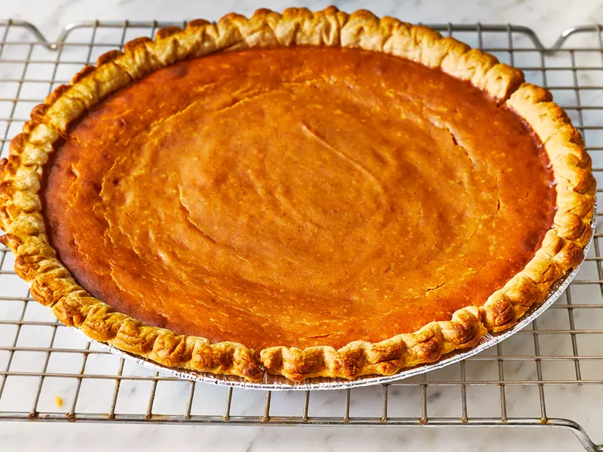

Perfect Pumpkin Pie

Description
We have over 130 recipes for homemade pumpkin pie here at Allrecipes, but this recipe takes the cake (or pie) with over 2,600 five-star ratings. And it's proof that a good recipe doesn't necessarily need to be a complicated one — you get a great result with canned pumpkin puree and store-bought pie crust.
Of course, you can customize it to suit your preferences by using fresh pumpkin or a homemade pie crust for that from-scratch taste. Plus, it can be made ahead of time and refrigerated (or frozen) until you're ready to serve! Your search for the perfect pumpkin pie ends here.
Ingredients
- Pumpkin puree
- Sweetened condensed milk
- Eggs
- Ground cinnamon
- Ground ginger
- Ground nutmeg
- Salt
- Unbaked pie crust
Steps
- Gather all ingredients.
- Preheat the oven to 425 degrees F (220 degrees C).
- Whisk pumpkin puree, condensed milk, eggs, cinnamon, ginger, nutmeg, and salt together in a medium bowl until smooth.
- Pour into crust.
- Bake in the preheated oven for 15 minutes.
- Reduce oven temperature to 350 degrees F (175 degrees C) and continue baking until a knife inserted 1 inch from the crust comes out clean, 35 to 40 minutes.
- Let cool before serving.